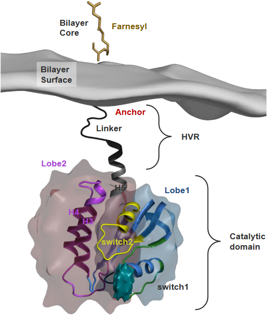

5 Anti-Ras Drugs
The first week’s lecture has already covered how Ras behaves in the cell - including how it goes into the nucleus.
The Ras enzyme has different shapes (i.e., conformations) depending on whether or not it is active or inactive.
As previously noted, Ras binds to a protein called SOS (i.e., short for son of sevenless), and when it does, its overall shape is pretty similar to that of it when it binds to GTP if you don’t account for the Mg2+ ion and the stuff that happens in the P-loop.
In the above graphic, the SOS protein is found within a region called the H loop, and this controls the exchanging.
5.1 A Little About Ras
Scientists figured out that when small proteins called GTPases were activated, this caused diseases no thanks to the signalling effects that these GTPases have.
As of now, scientists know of three ways that these activations can happen:
- Increased GEF activity (i.e., a kinase) may keep the GTPases active for a long, long time.
- The GTPases’ genes may be mutated, so this makes it so that the proteins themselves cannot be hydrolyzed or inactivated.
- The GAP protein - which typically removes the phosphate groups and inactivates the GTPases - is unable to do its job.
5.1.1 Ras Cannot be Targeted
However, scientists think that Ras is one of those proteins that cannot be targeted. Ras is almost like a sort of criminal mastermind that evades the police’s attention for these couple of reasons:
- Ras has a smooth surface. It doesn’t have many pockets where a molecule can bind tightly to.
- Small GTPase proteins don’t have spaces (i.e., cavities) for small molecules to bind to.
- GTPases communicate via something called protein protein interactions (i.e., PPIs), and current approaches aren’t really good at preventing PPIs from happening.
Because of this, the current inhibitors that we have to prevent Ras from doing its thing have looked at targeting upstream and downstream events like the Ras-MEK-ERK pathway. Scientists also look at compounds that can mess up how Ras is organized.
5.1.2 Ftase Inhibitors
In the past, scientists though that inhibiting Ftase - the enzyme that attaches farnesyl pyrophosphate onto the C-end of Ras and stabilizes it in the cell’s membrane would be an incredibly promising way to go about inhibting Ras. But, when they tried to put this into practice (i.e., clinical trials), they found out that this idea didn’t work so well because Ras can also be stabilized in the membrane by another kind of enzyme: geranylgeranyl transferases.

Although we don’t really know much about the membrane that Ras binds to, we do know that a part of it called the catalytic domain is in contact with the membrane.
These domains have a lot of something called cholesterol, and the “switch” region shown in the above graphic can have all sorts of conformations that scientists thing could play roles in various functions. That said, there are two kinds of conformations in GTP-bound Ras proteins.
State 1 of the Ras protein is a version of Ras that doesn’t have interactions between a Mg2+ ion and amino acids. The state also doesn’t bind to effector proteins all that well.
5.2 Inhibiting Ras Activity
The above graphic shows some plausible ways that the Ras enzyme can be inhibited.
5.2.1 Interference with Nucleotide Binding
If Ras cannot switch between its active and its inactive states, then it cannot become activated.
However, there’s a big, big problem with this: the GTP molecule doesn’t really bind to Ras with that high of an affinity (i.e., the two molecules don’t bind together that strongly as well).
Scientists have found out that small molecules can bind to GTPase called Cdc42, and it’s these molecules that can affect Ras’ conversion from its inactive to its active state.
5.2.2 Irreversible Covalent Modification
When Ras has something called a K-Ras activating mutation in its G12C location, we can target the Ras enzyme by irreversibly attaching inhibitors to Ras’ active site.

Luckily for us, it turns out that this is the most common kind of mutation in Ras when it comes to lung cancer. About 7% all lung cancer tumors have this kind of mutation.
5.2.3 Stopping GTPase-GEF Interactions
The problem with using small molecules to inhibit Ras itself is that it also has to compete with the GEF protein. And even if the molecule in question was able to compete with GEF, it probably wouldn’t do well in the grand scheme of protein-protein interactions
On top of that, we could also try to use protein inhibitors instead of just small molecules. They may have higher specificities, but there are three main problems with this approach:
- It may take a lot of time, money, and resources to make such a protein
- The protein could just be degraded by the body’s enzymes
- If the protein is too big, it might not be able to cross to certain areas like the blood-brain barrier.
In the above PyMOL visualization, we see that there is an alpha helix that belongs to the SOS protein - the protein is also facing the Ras protein. The red regions and the amino acid positions suggest that that part of SOS interacts with the Ras protein.
5.2.3.1 Peptide Inhibitors
One way we could go about stopping SOS (i.e., a GEF that activates Ras) is by making a replica (i.e., surrogate) of the SOS protein’s \(\alpha\)-helix.
As we can see, the original \(\alpha\)-helix isn’t that folded nor does it dissolve in water all that well. Certain amino acid changes in the primary sequence of this helix can improve its structure and also its activity.
The way we usually go about making these \(\alpha\)-helix variants is that we use chemistry and two reagents called 4-pentanoic acid and N-allyl glycine to make the covalent bonds between every three or four amino acids. The bond has has the following structure: C-triple bond-C-C-N.
5.2.3.1.1 Raw Data
In the above graphs, we have three different helices: \(\alpha\)H2, HBS2, and HBS3. Nonetheless, the HBS3 helix’s affinity for the Ras-GDP complex is about ten times lower than that of the SOS protein’s.
HBS3 messes up the job of SOS when it comes to swapping out molecules in a test tube. It also makes a process called ERK activation slower in HeLa cells when they don’t have enough nutrients.
5.2.3.2 Hydrocarbon Staples
Something else that we can do to make better \(\alpha\)-helices is that we can also use peptides that are called hydrocarbon staples.
What we’re essentially doing here is that we use different hydrocarbons (i.e., compounds that only have carbons and hydrogens on them) to link various amino acids (usually those four to seven residues apart).
A chemical reaction called the RCM reaction is used to make this happen.
The above figure shows some raw data as they pertain to different alpha helices with different hydrocarbon staples put onto them. These helices were all examined in the site of the Ras protein (i.e., with the GEF protein next to them).
What we can see is that the a, c, and d helices all exhibit some sort of effect on the Kras mutant of the Ras protein (i.e., the “Kras” refers to the specific type of a Ras protein).
Indeed - different hydrocarbon staple peptides have different affinities for for the Kras binding pocket.
Of one these helices in particular is SAH-SOS1_A_. This peptides helps inhibit Ras signalling effects in cancer patients whose cells have the G12D mutant of Ras.
5.2.4 Inhibiting GTPase-Effector Interactions
In our cells, there’s a protein called FBPK12 that pretty much just binds to other proteins.
If we have - say - a bifunctional peptide or a protein with two different sequences or domains (i.e., regions), what can happen is that this bifunctional peptide would bind to FBPK12 and also Ras
One cool thing to note about Ras is that it has two different states in this context:
State 1
This state really likes to bind to GTP, but not so much the proteins that are involved in signalling later down the road. This state also has binding pockets that reduces signalling by binding to Ras.
State 2
The second state pretty much just wants to bind to effector proteins (i.e., once Ras is activated).
5.2.5 Stabilizing GTPase-Protein Complexes
When Ras forms numerous complexes with other proteins, this may lead to the creation of new binding sites that we can then target using drug molecules. These same drugs can also stabilize the complexes.
As an examplee, the above compounds all bind to Ras - we know this because of this thing called screening. Compount 46 binds to site A of Ras while compounds 47 and 48 bind to site B of Ras.
The binding of these compounds then cause Ras to be reorganized and for the Cys118 residue to be exposed. This subsequently allows compound 49 to bind to that residue.
5.3 Drug Targets
The generation of this thing called N5, N10-methylene-THF involves a reaction cycle. In the context of cancer cells, there is a crucial need for a continuous and rapid supply of dTMP to support DNA synthesis. Inhibiting the enzymes involved in this pathway can be a potential strategy to kill cancer cells. Two specific enzymes, Thymidylate Synthase (TS) and Dihydrofolate Reductase (DHFR), are targeted by anticancer drugs.
One of these drugs is FdUMP, which is a fluorinated analog of dUMP. It functions as an irreversible inhibitor of TS. FdUMP acts as a “suicide substrate,” effectively locking TS into a ternary complex with itself and tetrahydrofolate (THF).
On the other hand, drugs designed to target DHFR are analogs of dihydrofolate (DHF). These compounds, often referred to as anti-folate drugs, have a significantly higher affinity for DHFR, binding to it with a thousandfold greater affinity.
5.3.1 Drug Resistance
Cancer cells are tricky because they have a lot of mutations, which means they’re not all the same. This makes it hard to kill all of them with just one medicine. Also, they can change and become resistant to the drugs we use against them.
Some cancer cells have something called Multi-drug Resistance, or MDR. This happens because they have too many copies of a gene called Mdr1, which makes a special protein that helps them pump drugs out of the cells. So, if we use one drug to treat these cells, they not only become resistant to that drug but also to others they haven’t seen before.
There are proteins that work like pumps, pushing drugs out of the cells. And sometimes, the gene that makes DHFR (another protein) can become too many in the cells. When there’s too much DHFR, the cancer cells don’t respond well to certain drugs called antifolates.
To fight cancer effectively, we often use multiple drugs together because this makes it harder for the cancer cells to become resistant. So, it’s like attacking them from different angles to make sure we can beat them.